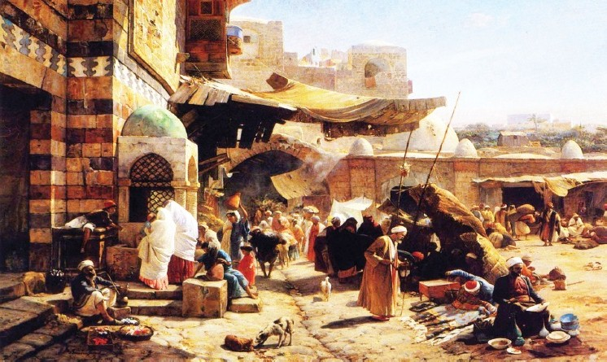

Türk, hatta dünya spor tarihinin en olağanüstü olaylarından biri de Can Bartu’nun aynı gün içinde futbolcu olarak Beşiktaş’ın, basketbolcu olarak Galatasaray’ın canını yakması olmuştur. 24 Mart 1957 günü saat 14.30’da Mithatpaşa Stadı’nda yapılan futbol maçını 4-2 kazanan Fenerbahçe’nin iki golü genç Can Bartu’dan gelmişti. Akşama ise Spor ve Sergi Sarayı’nda Galatasaray’la basket maçları vardı. İlk kez radyodan anlatılan bir basket maçıydı bu üstelik ve spiker de Eşref Şefik’ti. Bu maçın bir başka özelliği daha vardı: İlk kez Fenerbahçe’nin soyunma odasına masör gelmişti. Mithatpaşa’daki çamur deryasından çıkan Can Bartu’ya masaj yapmak için... Sonunda Fenerbahçe o akşam basketbolda Galatasaray’ı yenmişti. Gündüz Beşiktaş’a iki gol atan Can’ın, akşam Galatasaray’a attığı basket sayısı ise 36 idi.

Pazar yeri...